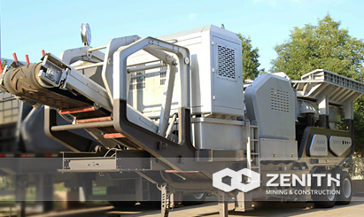
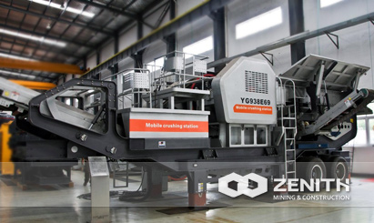
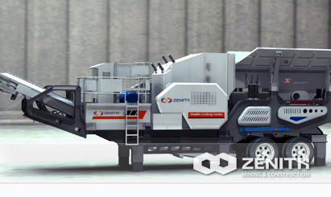
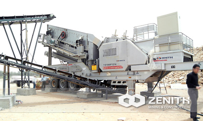

- 
- 
- 
- 
Portable Crusher
Portable crusher, also called portable crushing plant, is Zenith's newly-developed mining equipment, the design of which aims to overcome the obstacles of uneven ground and improve client's efficiency and lower cost. Typically, a portable crusher always integrates the crushing, sorting and conveying in a machine. Customers can equip different configuration according to different processing materials, scale and requirements. So it can meet the special requirements of clients.
Introduction of Portable Crusher
Portable crusher is not limited by the working site, and reduces high transportation cost. It can crush materials on site or nearby. It is very suitable for dealing with open-pit mines. In spite of complicate conditions in the quarry, mobile crushers can overcome those limitations, and give play to advantages in the mining industry. Undoubtedly, Zenith's portable crushing plant has expanded the concept of crushing in the mining industry.
Our mobile impact crusher equipped with the unit configuration, it adopts the latest manufacturing technology, high-quality chrome blow bar and wear-resisting counterattack linings. With high crushing ratio, which can ensure a good particle shape. For those mining investors who are eager to seek portable crusher for sale and rent, Zenith's portable crusher should be carefully considered.
Portable Crusher has a very wide range of application
Portable crushing plant can be widely used for crushing and screening in lots of areas such as road construction, building, metallurgical and energy industries, etc. Nowadays, Zenith's portable crusher is one of most popular mobile crushing equipment used for mining by quarry contractors and mining companies due to its flexibility and automaticity. In a word, portable crusher can make a difference to global mining industry.
Why Does The portable Crusher So Popular in the market ?
- High flexibility. So it saves much time;
- Move easily. It is able to reach the crushing place where it is hard to go. It not only can drive on the smooth road, but also around the bumpy road;
- Good performance and convenient maintenance. Material is delivered by belt conveyors, which are multifunctional, easy maintenance, and low investment;
- Low transportation cost. Portable crushing plant avoids the redundant procedure of transporting materials away from the site and then crushing;